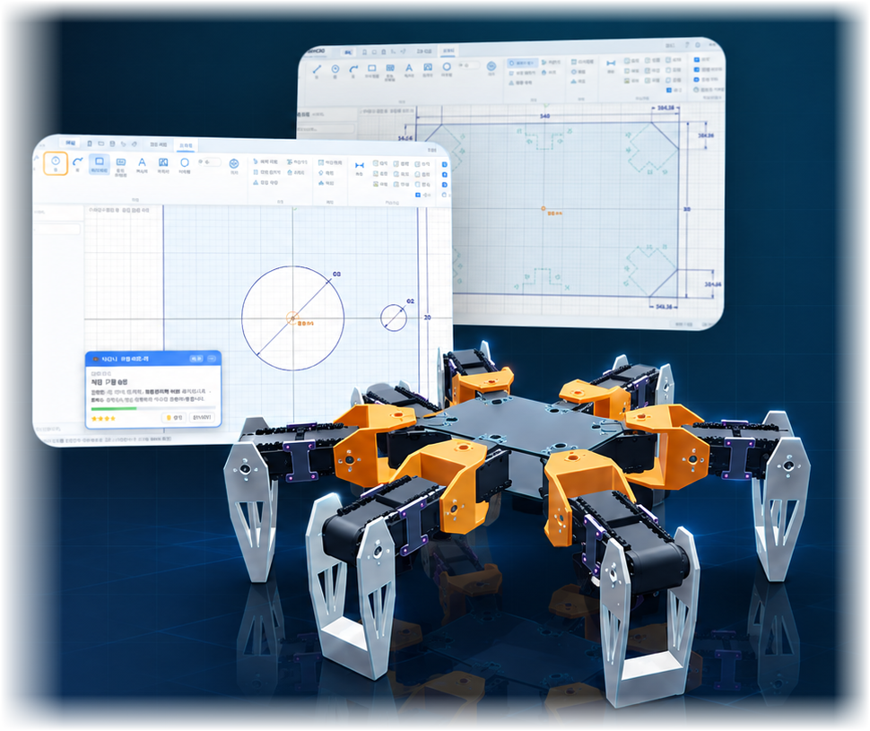
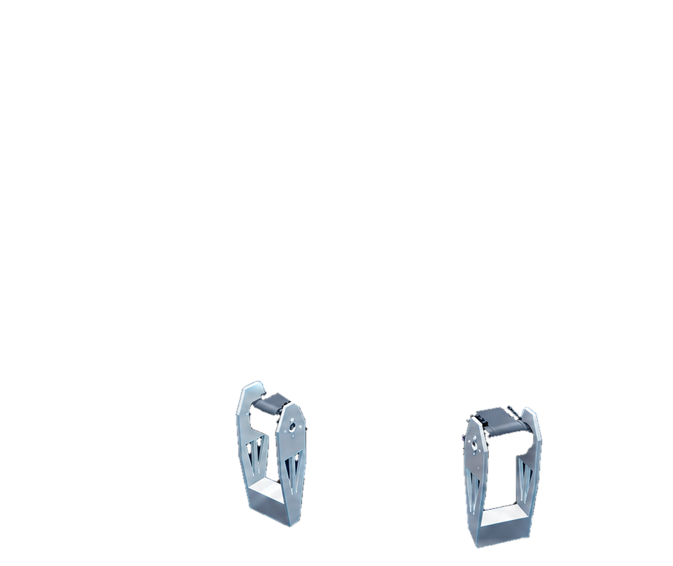
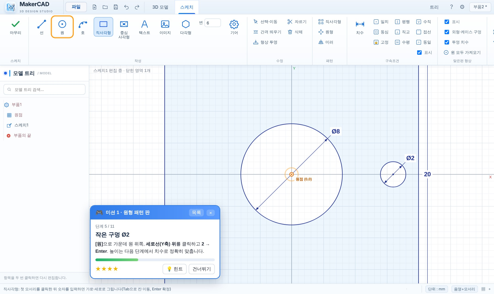
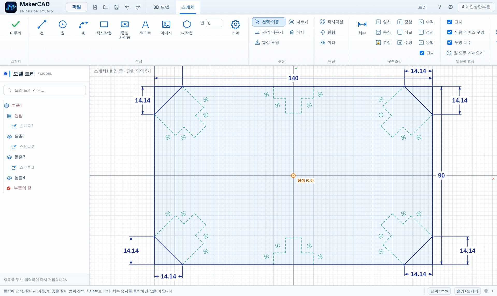
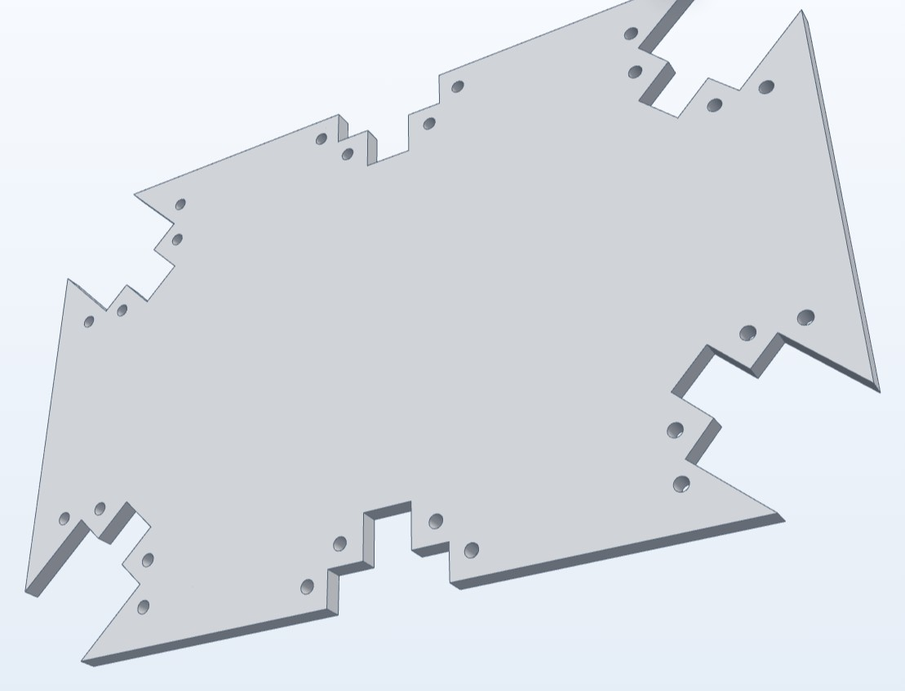
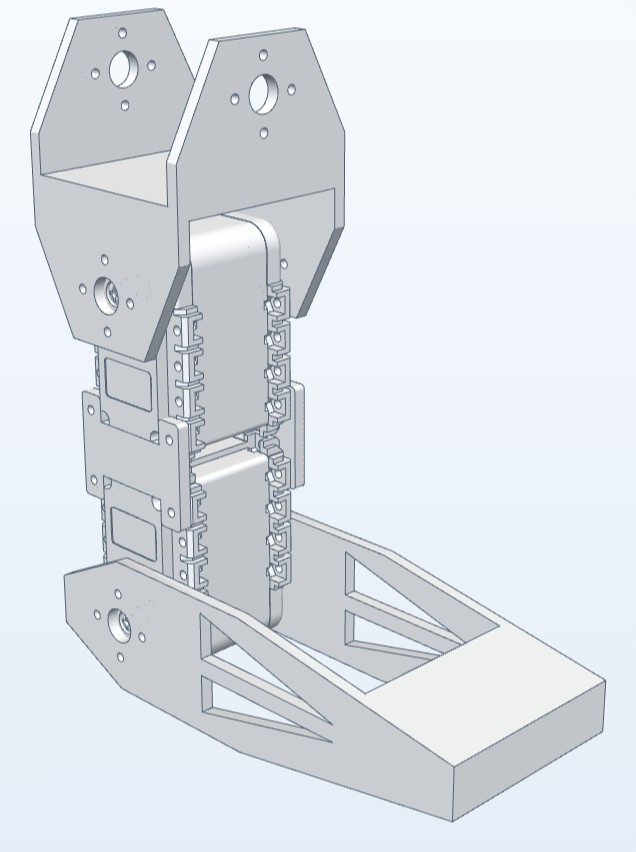
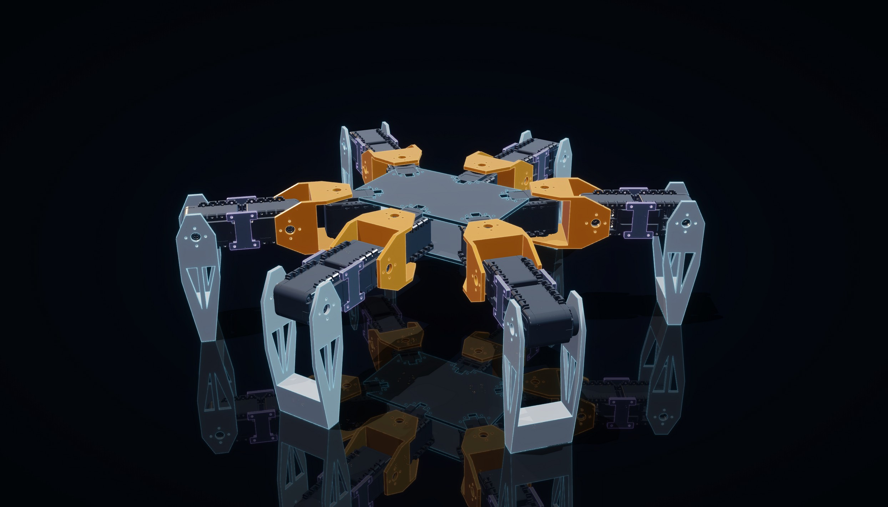
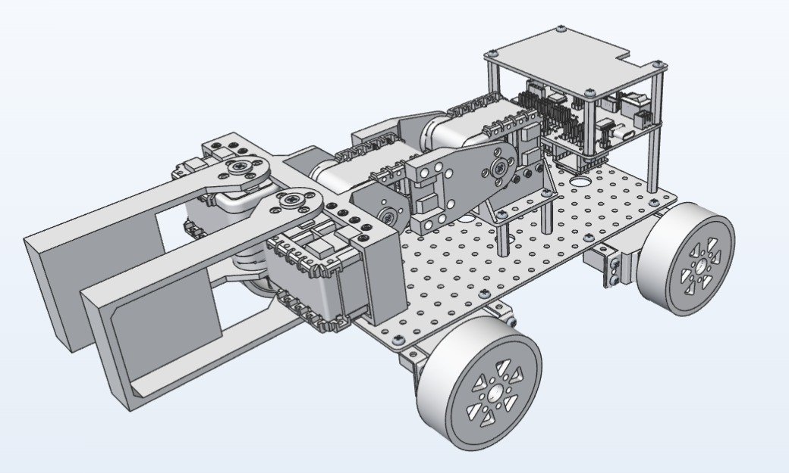
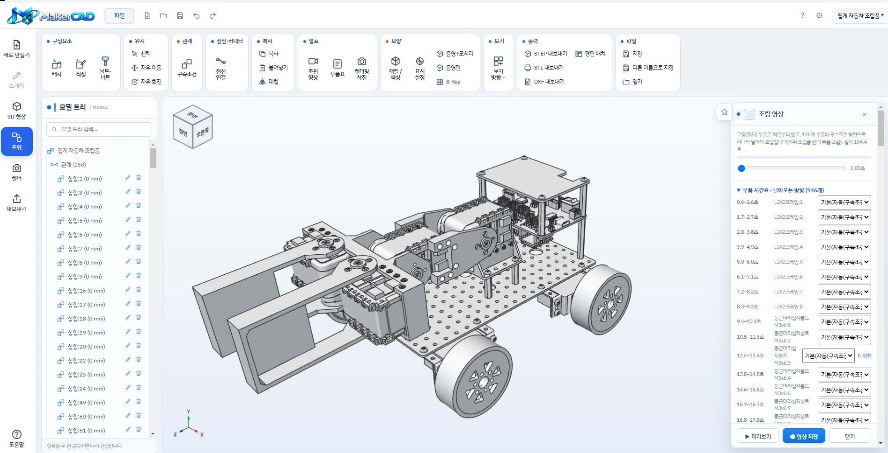

게임처럼 배우는 미션
안내 카드를 따라 한 단계씩 진행하고, 맞게 완성하면 다음 단계로 넘어가며 별점을 받습니다.
그리기부터 3D 모델, 3D 프린터·레이저커팅 출력,
로봇 조립까지 메이커캐드(MakerCAD) 하나로 이어집니다.


메이커캐드는 복잡한 전문 CAD보다 학생이 먼저 이해할 수 있는 흐름에 집중했습니다. 설명을 보고 따라 하고, 직접 만들고, 실제 작품으로 출력합니다.
안내 카드를 따라 한 단계씩 진행하고, 맞게 완성하면 다음 단계로 넘어가며 별점을 받습니다.
STL·STEP으로 3D 프린터, DXF로 레이저커터까지 수업 결과물이 실제 제작으로 이어집니다.
설계한 부품과 모터를 ‘삽입’ 기능으로 맞춰 보며 6족보행로봇 같은 움직이는 작품을 완성합니다.

처음 CAD를 배우는 학생도 혼자 다시 따라올 수 있도록 자동 판정, 별점, 힌트와 예제를 제공합니다.
스케치 → 돌출 → 확인. 초보자가 이해하기 쉬운 세 단계로 설계를 시작합니다.

2D SKETCH
3D MODEL선 · 원 · 사각형을 그리고 치수를 숫자로 입력합니다.
판 두께를 정하고 필요한 구멍은 잘라냅니다.
화면을 회전하며 완성된 부품을 점검합니다.
수업이 화면에서 끝나지 않습니다. 만든 설계를 3D 프린터와 레이저커터로 바로 연결합니다.
입체 부품, 브래킷, 로봇 다리처럼 두께와 구조가 있는 작품을 그대로 출력할 수 있습니다.

아크릴·MDF 판재용 외곽선을 DXF로 내보내고, 여러 부품을 한 판에 배치할 수 있습니다.

구멍과 모터 축을 클릭해 끼워 맞추는 ‘삽입’ 조립으로 실제 로봇처럼 구조를 확인합니다.
바퀴, 프레임, 서보모터, 집게, 제어보드까지 MakerCAD에서 설계하고 조립했습니다. 조립이 끝나면 부품이 하나씩 날아와 끼워지는 조립 영상도 자동으로 만들어집니다.


메이커캐드(MakerCAD)로 4족 보행로봇을 3D 모델링하고 모션 프로그램과 연동했습니다. 모터 제어와 3D 로봇 모델이 함께 움직여, 실제 로봇을 켜기 전에 가상공간에서 걷는 모습을 먼저 확인합니다.
메이커캐드 로봇 동작 화면 · 서기, 앞으로·뒤로 걷기, 왼쪽·오른쪽 돌기, 인사 (31초)
공개문제의 실기 순서 그대로 연습합니다. 도면을 읽고 메이커캐드(MakerCAD)로 부품을 모델링·조립한 뒤 STP·STL로 저장하고, 슬라이싱과 출력, 후처리까지 한 번에 익힙니다.
한국산업인력공단 3D프린터운용기능사 공개문제 기준으로 정리했습니다. 시험 전 최신 공개문제를 꼭 확인하세요.
학생 수준과 수업 시수에 맞춰 미션 순서와 작품 주제를 자유롭게 조정할 수 있습니다.
스케치 · 치수 · 돌출
미션 1~2 구멍 판
면 위 스케치 · 관통
미션 3 ㄷ자 프레임
3D 프린터 · 레이저커팅
이름표 · 소품 · 거치대
모터 부품 · 삽입 조립
미션 4~7 6족보행로봇
초등 기초 수업부터 중·고등 메이커 프로젝트, 학원·교육센터 로봇 과정까지 확장할 수 있습니다.
메이커캐드(MakerCAD) 웹 베타 버전을 미리 써 보고 싶은 분은 메일로 연락 주세요. 확인 후 접속 비밀번호를 보내 드립니다.
개인 구독부터 학교·학원 다중 설치까지 수업 규모에 맞춰 선택할 수 있습니다.
월 / 1인
연 / 1인
10대 / 1년
20대 / 1년
설치하고 미션 1을 켜면 첫 시간부터 학생들이 직접 3D 부품을 완성할 수 있습니다. 개발자 조용민이 수업 준비부터 도입까지 직접 상담해 드립니다.
도입 문의하기 →